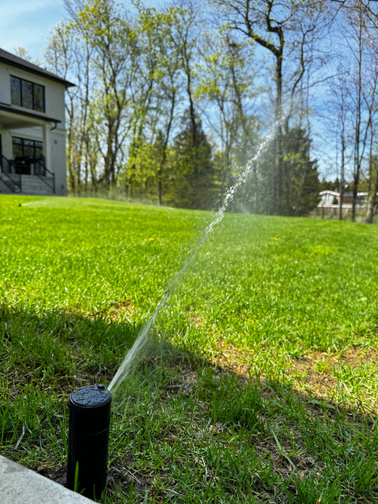
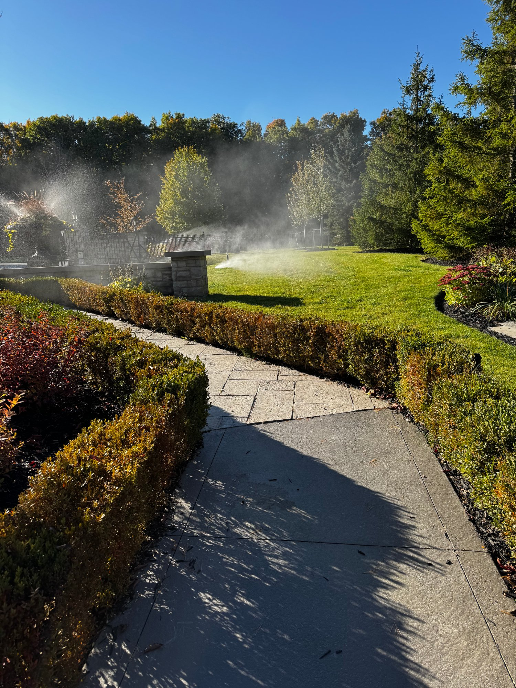
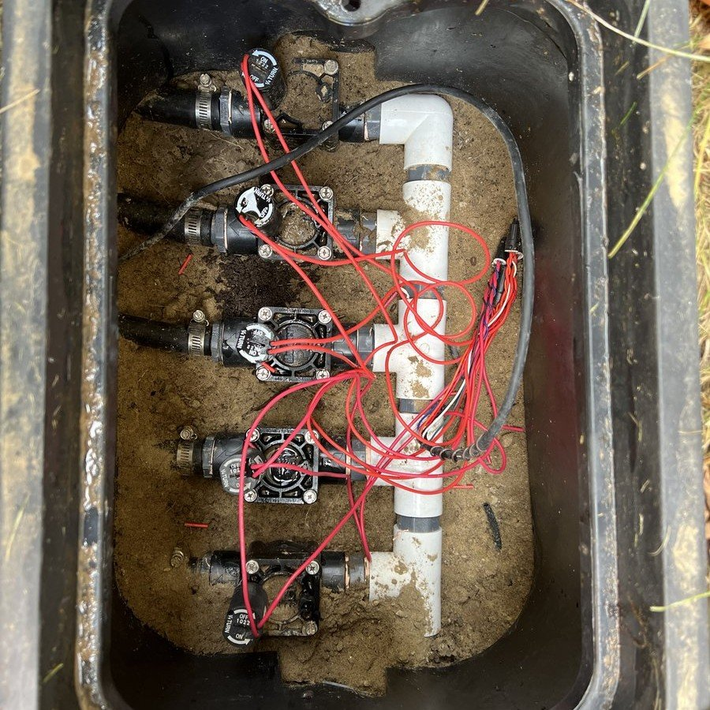

Every zone runs but one. That one comes up on the schedule and nothing happens — no water, no hiss, dry heads. It's one of the most common calls we get, and the good news is the fault is almost always in the same short list of places. Here's how to find it.
Why won't one sprinkler zone turn on when the others work?
If every other zone runs and one stays dry, the fault is at that zone's valve — a burnt-out solenoid, a broken or corroded wire, or a diaphragm stuck shut. The heads are almost never the cause. Work from the controller outward.

Is it one zone, or is the whole system not turning on?
If nothing runs at all, it isn't a zone fault. Check power at the controller, the main shut-off, and the water supply first. If every zone runs except one, the problem is isolated to that zone's valve or the wire feeding it.
First, confirm it's really just one zone. If nothing runs at all, that's a controller, power, or water-supply problem, not a zone fault. If every zone works except one, the problem is specific to that zone's valve or the wire running to it — that's the case this guide walks through.
A whole system that won't start usually comes down to three things: the controller has lost power or its programming, the main shut-off to the irrigation line is closed, or the system was never opened for the season. Check those before assuming a fault. If the controller is running its program and still nothing happens anywhere, the problem is upstream of the valves.
How do I tell if it's the controller, the wire, or the valve?
Start the dead zone manually at the controller. If the valve stays silent, measure resistance across that zone's terminal and common — a healthy Hunter solenoid reads roughly 20–60 ohms. An open circuit means a broken wire or burnt-out coil; a normal reading points at the station or the valve.
Manually start the dead zone from the controller. On a Hydrawise system, watch for a wiring alert — it monitors the current to each valve and will often tell you the circuit's open. On any controller, if the manual start does nothing at the valve, you've narrowed it to the wire or the valve itself.
A Hydrawise controller's built-in current monitoring is a real advantage here: it measures the electrical draw on each zone and flags an open circuit or a shorted solenoid, so it often points you straight at the problem before you've lifted a valve-box lid.
Resistance is what separates a wire fault from a valve fault without digging anything up. At the controller, put a multimeter across the zone terminal and common. Roughly 20–60 ohms means the solenoid coil and the wire run are both intact, so the fault is either the station output or the valve itself. An open circuit means the wire is cut or the coil has burnt out. A near-zero reading means a short — usually a nicked wire or a corroded splice in a flooded box. If the resistance reads healthy and the zone still won't fire, move that wire to a terminal you know works: if it runs there, the original station output is dead.

What should I listen for at the valve?
Start the zone and listen at the valve box. A soft click or buzz means the solenoid is energizing — if there's still no water, suspect a stuck diaphragm or debris. No sound at all points to a dead solenoid or a broken wire.
At the valve box for that zone, start the zone and listen for a soft click or buzz — that's the solenoid energizing. Click and buzz but no water usually means a stuck diaphragm or debris. No sound at all points to a dead solenoid or a broken wire.

What causes a sprinkler zone to stop working?
In order of how often we find them: a failed solenoid, a broken or corroded wire, a stuck or torn diaphragm, and rarely a dead controller station. Flooded valve boxes and later digging account for most of the wire faults we see.
In rough order of how often we find them:
- Failed solenoid — the electrical coil that opens the valve burns out. Common, and a clean fix.
- Broken or nicked wire — a wire cut by later digging, or a corroded connection in the valve box. Wire-nut corrosion in a flooded box is a classic.
- Stuck or torn diaphragm — grit holds the valve shut (or open). More likely on older valves.
- Controller station fault — rare, but a dead output terminal will kill one zone; the controller test in Step 1 catches it.

What causes a sprinkler zone to stay on and not shut off?
A zone that won't shut off is usually the valve's manual bleed screw left open, or grit holding the diaphragm off its seat. Check the bleed screw first. If it's fully closed and water still runs, close the main shut-off and book a repair.
It's the same valve, failing the other way. Start with the manual bleed screw: if it's been opened and not fully closed, the valve stays open no matter what the controller does, and closing it solves the problem outright. If the bleed screw is closed and the zone still runs, debris is holding the diaphragm off its seat. That won't clear from the surface — the valve has to come apart to be cleaned. A valve that sticks once tends to stick again, which is why we rebuild the whole manifold rather than chase one valve.
Can a bad sprinkler head cause a whole zone to fail?
No. If the whole zone is dead, no water is reaching the heads at all, so replacing them changes nothing. Head faults look different — spraying sideways, failing to pop up, or misting. That's a head problem, not a dead zone.
If a whole zone is dead, the heads are almost never the cause. No water is reaching them at all, so swapping heads won't help. Head problems look different — a head that sprays sideways, won't pop up, or mists. If that's what you're seeing, it's a head issue, not a dead zone.
(For that case, see sprinkler head not spraying. If instead water is pooling when the system's off, that's a valve leak — see water pooling around a sprinkler head.)
What does it cost to fix a sprinkler zone that won't turn on?
A solenoid or wire repair is usually quick. If the valve itself needs replacing, PJL rebuilds the entire manifold in that box rather than a single valve — it's more reliable and it prevents the next failure. Everything is quoted before work starts.
If it's a solenoid or a wire, it's often a quick repair. If the valve itself needs replacing, we rebuild the whole manifold in that box, not a single valve — it's more reliable and it prevents the next failure. Pricing is by manifold size plus the valves, quoted before any work.
When a valve in a box has failed, PJL replaces the full manifold and every valve in that box together: a $135 (1–3 valve) or $285 (4–6 valve) manifold rebuild, plus $74.95 per Hunter PGV valve, plus the $95 service call. Everything's quoted up front.

Can't get the zone to wake up?
Run the symptom through our AI diagnostic tool first — it often pinpoints whether it's the solenoid, the wire, or the valve before we load the truck. If its call matches what we find on site, you get one hour of repair labour free.
Start the AI diagnosis